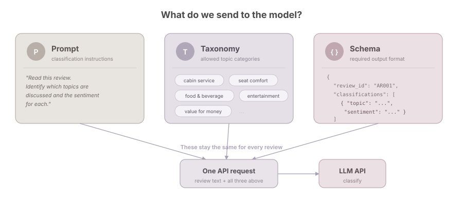
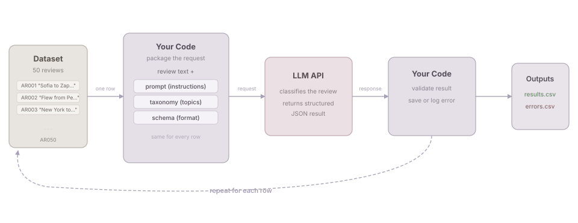
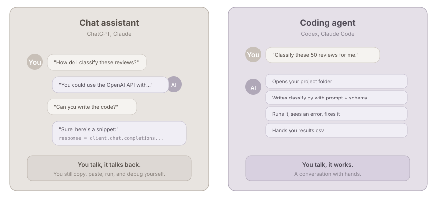

From Open-Ended Responses to Structured Insights
SMU Libraries
2026-09-23
We will take a real text classification task and turn it into a small, inspectable workflow.
By the end, you should be able to:
Part 1 · Listen
Why and what
Part 2 · Do
Hands-on with a coding agent
Part 3 · Reflect
Wrap up
Give context → Ask → Build → Run → Check → Revise ↺
Human-led Agent-led
Not one perfect prompt, but an iterative conversation with the agent.
We provide direction and judgement. The agent builds, runs and revises the workflow.
Airline passenger reviews from Skytrax, published on Kaggle by Sujal Suthar.
Source: Airline Reviews Dataset on Kaggle
| Reviews | 8,100 passenger reviews |
| Airlines | 10 carriers — Turkish Airlines, Qatar Airways, Emirates, Singapore Airlines, Air France, Cathay Pacific, and others |
| Cabin class | Economy (68%), Business (26%), Premium Economy (5%), First (1%) |
| Traveller type | Solo leisure, couple, family, business |
| Period | Multiple years of reviews |
Each review is a free-text narrative covering multiple aspects of the flight.
| review_id | Airline | Review (excerpt) |
|---|---|---|
| AR002 | Qatar Airways | “Check-in was good, seats were comfortable but restricted… Disappointed in the food… Staff were very good but could have come round more often…” |
| AR008 | Singapore Airlines | “The service was excellent… meals were excellent, inflight entertainment was excellent, and the cleanliness in the washrooms were perfect…” |
| AR007 | Emirates | “Rude staff that treat your special meal as a nuisance… Take the blankets and headphones 30 minutes before landing to save time and costs.” |
Notice: a single review can mention multiple topics with different sentiments.
But today we focus on the free-text review — the unstructured part that resists simple counting.
For today, we work with 50 reviews, simplified to two columns:
review_id, review_text
AR001, "Sofia to Zaporizhia via Istanbul. I used Turkish airlines..."
AR002, "Flew from Perth to Doha then onto Munich with Qatar Airways..."
AR003, "New York to Paris. This was one of the many Air France..."
...Why simplify?
| Manual coding | LLM-assisted workflow | |
|---|---|---|
| Speed | Slow | Fast |
| Consistency | Depends on coder fatigue | Depends on prompt and model |
| Transparency | Codebook + training | Prompt + taxonomy + inspection |
| Scale | Dozens to hundreds | Hundreds to thousands |
| Judgement | Human throughout | Human at design and evaluation |
We are not replacing the researcher.
We are changing where and how the researcher’s judgement is applied.
The cabin crew were helpful, but the seat was uncomfortable and the meal was disappointing.
Already, this is more than “positive or negative?”
For each review, we want to:
ChatGPT or Claude can help us:
Chat is useful while we are still figuring out the task.
Copy a review → write or paste a prompt → inspect the answer → copy the result → repeat
Read a row → apply stored instructions → call the model → validate the response → save output or error
Everything lives in the project folder — the data, the instructions, and the outputs. You can inspect it, rerun it, and hand it to someone else.
You can! And for a few reviews, it works fine.
But try it with 50 or more, and ask yourself:
We need a way for our code to talk to the model — one row at a time, same instructions, every result saved.
That is what an API does.
A way for one piece of software to ask another service to do something.
You already use APIs without knowing it:
The pattern is always the same:
Request (ask in a specific format) → Response (get back a structured answer)
Same idea, but the service is a language model.
Same model underneath. But your code is in control, so you can process one row at a time, with the same instructions, and save every result.


A good result is not only plausible to read.
It must also be valid enough for the next step in the workflow.

The important difference is not which model is smarter. It is how the tool connects to your project.
Define the task, taxonomy and review criteria
↓
Build and operate the workflow
↓
Classify each review
↓
Inspect outputs, errors and disagreements
airline-review-workshop folder is downloaded and unzippedCheck whether Python 3.10 or above is installed on this computer. If not, help me install it.
Stuck? Raise your hand, or pair up with your neighbour.
airline-review-workshop/
├── README.md
├── requirements.txt
├── .env.example
├── classification-rule/
│ ├── classification_prompt.md
│ ├── taxonomy.yaml
│ └── output_schema.json
├── data/
│ └── airline_reviews_sample_50.csv
├── compare.py
├── reference_set_final.csv
└── output/The classification rules, the data, and the comparison script are ready. The only missing piece is classify.py. That is what we will build.
Set up this project for me. Install the Python dependencies from requirements.txt. Then copy .env.example to .env.
After this, add your API key to .env.
If you have your own API key, use it. Otherwise, use the shared key provided.
Read the project files in this folder. Tell me:
Do not write any code yet.
Check the agent’s summary together. Does it match what we discussed?
Build classify.py that reads the classification rules from classification-rule/, sends each review to the Anthropic API using claude-haiku-4-5-20251001, validates the output against the schema, and saves results. Run it on the first 3 reviews only.
Watch the terminal output. You should see something like:
[1/3] Classifying AR001... ok
Open output/results.csv and show me the classifications for the 3 reviews we just ran.
Look at each result together:
A result can be valid JSON and still be a poor classification. This is where your judgement matters.
If something is off in the results, edit classification-rule/classification_prompt.md.
I updated classification_prompt.md. Re-run classify.py on the same 3 reviews and show me what changed.
This is an iterative process. Change the instructions, re-run, compare.
But do not overfit to these 3 reviews. A prompt that works well on unseen reviews is better than one tuned perfectly for 3.
When the prompt looks solid:
Run classify.py on all 50 reviews. Show me a summary when done.
Check the summary: how many succeeded? Any errors?
Open results.csv and show me a few rows. Are there any results that look wrong?
reference_set_final.csv should be in your project folder (if missing, download it again from the GitHub repo). Then:
Run compare.py to compare my results with the instructor reference set. Show me where we disagree and why.
The reference set covers 15 of the 50 reviews. It is not a golden standard. It is a starting point for discussion.
Go to menti.com
Code: 5570 3604
Everything lives in the project folder. The data, the instructions, the code, and the outputs. You can inspect it, rerun it, and hand it to someone else.
The project folder. It is a reusable starting point.
To adapt it to your own task:
The structure stays the same. The content changes.
Today we used a general-purpose LLM (Claude Haiku) for classification. It works, but it is also generating text, parsing JSON, and doing much more than we need.
Jev (TypeSafe AI, released last week) is a “System 1” model that only makes decisions. No text generation. You give it options, it picks one.
The trade-off: a general-purpose LLM can explain why it chose a label (useful when you need justification or human review). A classification-only model just gives you the answer. Pick based on what you need.
A related idea: use another LLM to evaluate the first LLM’s classifications.
For example, ask a second model: “Is this classification supported by the review text?”
This can help spot problems at scale, but the judge is also a model, not an objective answer key. It works best when you give it specific criteria rather than asking “is this good?”
Not something we cover in today’s workshop, but worth exploring if you scale this up to thousands of reviews.
DATA
↓
TASK SPECIFICATION
taxonomy + instructions + schema
↓
WORKFLOW
input → API call → validation → storage
↓
EVALUATION
technical checks + reference comparison + error analysis
↓
REVISION
data, taxonomy, prompt, code or review processThe learning can continue with prepared outputs:
A failed API call should not cancel the evaluation exercise.
LLM
A model that can generate and analyse language.
API
An interface that allows software to send requests to a service and receive responses.
Coding agent
A tool that can work with project files, write code and run commands in an iterative loop.
Taxonomy
The controlled set of topic categories used for classification.
Output schema
A machine-readable definition of the expected response structure.
Reference set
Instructor-reviewed examples used as common comparison points.
Agentic Workflow Series · LLM-Assisted Text Analysis